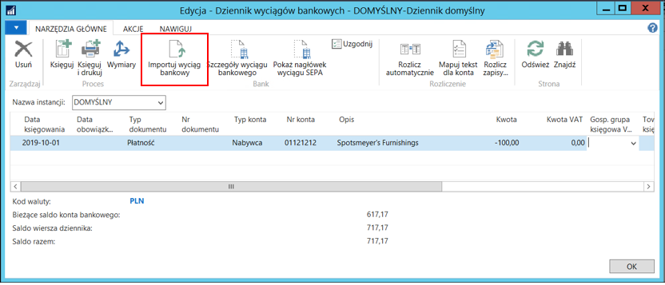
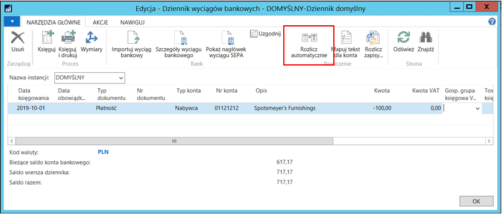

Import/przekazywanie wyciągów bankowych
Moduł Bankowość elektroniczna umożliwia import pliku z wyciągami
bankowymi
i ich automatyczne rozliczenie.
Import wyciągów bankowych
Aby wykonać operację importu wyciągu bankowego, należy wybrać Bankowość elektroniczna > Zadania >Dzienniki wyciągów bankowych. W dzienniku odpowiedniego raportu bankowego należy na wstążce kliknąć przycisk Importuj wyciąg bankowy. W nowym oknie należy wskazać plik bankowy do zaimportowania i zatwierdzić klikając przycisk OK.
System zaimportuje wyciąg bankowy do dziennika wyciągów bankowych. Jeśli kartoteka dostawcy/nabywcy posiada zdefiniowane konta bankowe, system wprowadzi właściwego dostawcę/nabywcę w wierszu dziennika. Jeśli natomiast nie zostanie znaleziona taka referencja, użytkownik powinien ręcznie uzupełnić pole Typ konta oraz Nr konta w każdym wierszu dziennika wyciągu bankowego. Pozostałe pola przy braku błędów w czasie importu system uzupełnia automatycznie.

W dzienniku po zaimportowaniu wyciągu bankowego można również rozliczyć poszczególne wiersze wyciągu z zapisami (dokumentami), na podstawie których utworzony został odpowiedni przelew, klikając na wstążce przycisk Rozlicz automatycznie. Wykorzystuje ona identyfikator zdefiniowany w procesie eksportu przelewów do określenia konkretnych zapisów księgi nabywcy/dostawcy. Określanie konkretnych zapisów odbywa się na podstawie rejestru.

Zostanie wyświetlony komunikat o ilości automatycznie rozliczonych zapisów, a rozliczone wiersze zostaną pokolorowane na zielono.
Nierozliczone zapisy należy rozliczyć w standardowy sposób klikając na wstążce przycisk Rozlicz zapisy.
Pomocne w ręcznym rozliczaniu zapisów mogą być szczegóły konkretnego przelewu. Dostępne są one pod przyciskiem Szczegóły wyciągu bankowego na wstążce. Wyświetlona zostanie lista wszystkich możliwych danych zaimportowanych w trakcie importu wyciągu.
Po poprawnym uzupełnieniu wierszy dziennika wyciągów bankowych i rozliczeniu zapisów, należy zaksięgować dziennik klikając na wstążce przycisk Księguj.